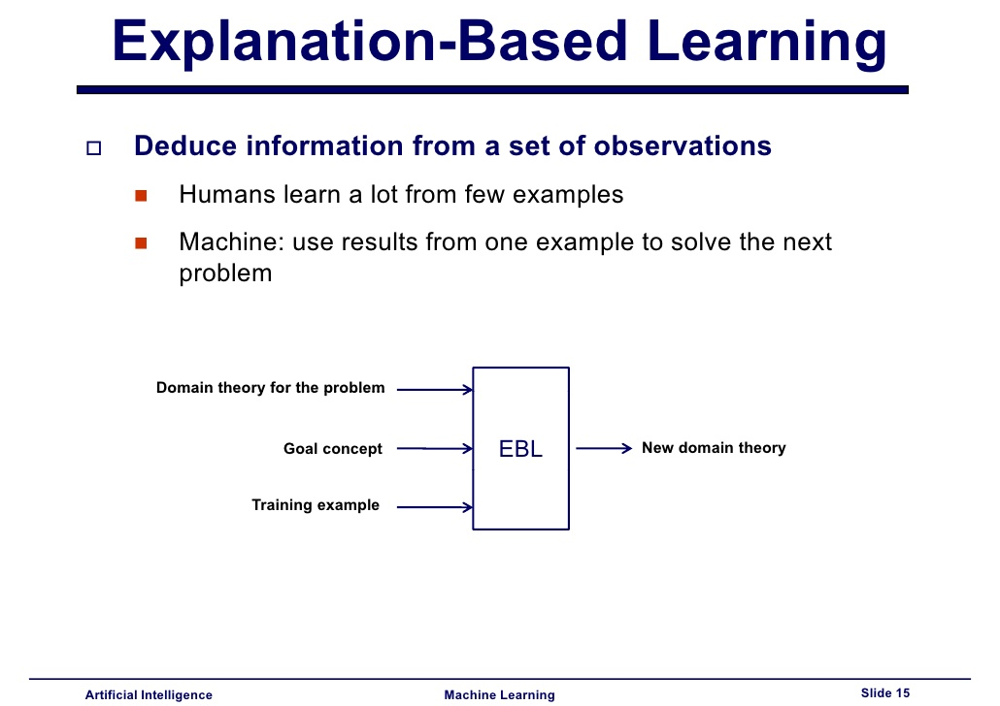
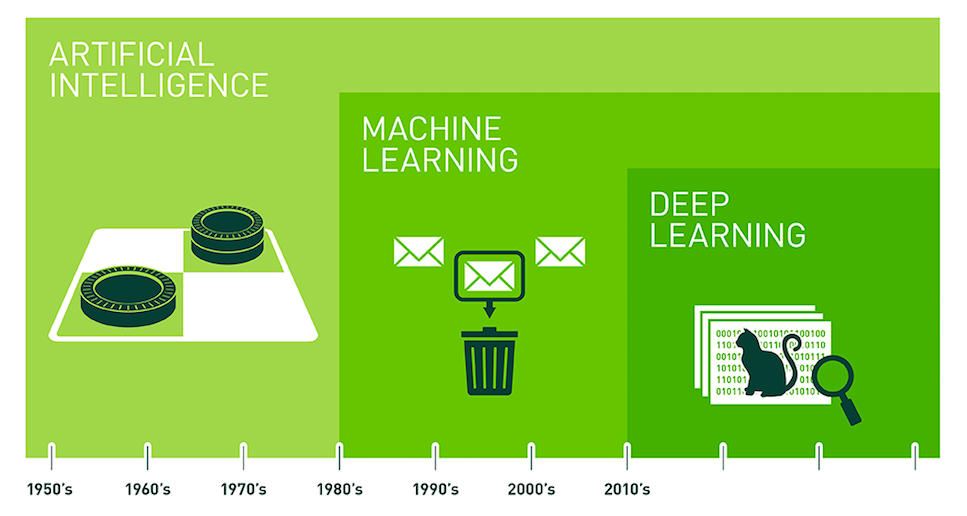

¿Historia del Aprendizaje Automatico?

-
“El ‘machine learning’ es un maestro del reconocimiento de patrones”
Hay que remontarse al siglo XIX para encontrar algunos de los hitos matemáticos que sentaron las bases de esta tecnología: el teorema de Bayes (1812), por ejemplo, definió la probabilidad de que un evento ocurra basándose en el conocimiento de las condiciones previas que pudieran estar relacionadas con dicho evento. Años después, en la década de 1940, otra serie de científicos sentaron las bases de la programación informática, capaz de traducir una serie de instrucciones en acciones ejecutables por un ordenador. Estos precedentes hicieron posible que en 1950 el matemático Alan Turing plantease por primera vez la pregunta de si es posible que las máquinas puedan pensar, con la que plantó la semilla dela creación de computadoras de ‘inteligencia artificial’ capaces de replicar de forma autónoma tareas típicamente humanas, como la escritura o el reconocimiento de imágenes. Fue un poco más adelante, entre las décadas de 1950 y 1960, cuando distintos científicos empezaron investigar cómo aplicar la biología de las redes neuronales del cerebro humano para tratar de crear las primeras máquinas inteligentes. La idea derivó en la creación de las redes neuronales artificiales, un modelo computacional inspirado en la forma en que las neuronas transmiten la información entre ellas a través de una red de nodos interconectados. Uno de los primeros experimentos en este sentido fue el realizado por Marvin Minksy y Dean Edmonds, científicos del Instituto Tecnológico de Massachussets (MIT), que lograron crear un programa informático capaz de aprender de la experiencia para salir de un laberinto límites que la tecnología tenía por entonces:
- falta de disponibilidad de datos
- falta de potencia de cómputo de la época
-
En 1997 un célebre hito marcó el renacer del aprendizaje automático: el sistema de IBM Deep Blue, entrenado a base de ver miles de partidas exitosas de ajedrez, logró derrotar al máximo campeón mundial de este juego, Garry Kasparov. El logro fue posible gracias al ‘deep learning’ o aprendizaje profundo, una subcategoría del ‘machine learning’ descrita por primera vez en 1960, que permite que los sistemas no solo aprendan de la experiencia, sino que sean capaces de entrenarse a sí mismas para hacerlo cada vez mejor usando los datos - Cronologia:
-
Los años 80 estuvieron marcados por el nacimiento de los sistemas expertos, basados en reglas. Estos fueron rápidamente adoptados en el sector corporativo, lo que generó un nuevo interés en Machine Learning.
- 1981 — Gerald Dejong introduce el concepto “Explanation Based Learning” (EBL), donde un computador analiza datos de entrenamiento y crea reglas generales que le permiten descartar los datos menos importantes.
- 1985 — Terry Sejnowski inventa NetTalk, que aprende a pronunciar palabras de la misma manera que lo haría un niño.
 Lecture3 - Machine Learning. Recuperado de
-
